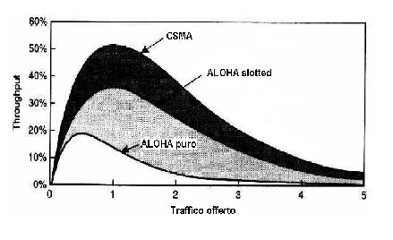
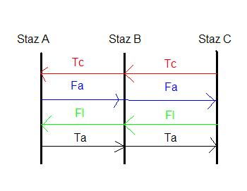

Torna alla pagina di Protocolli avanzati di rete
:: Protocolli avanzati di rete - Appunti del 27 Aprile ::
La maggior parte delle immagini di questa pagina sono prese dalle slide del prof Damiani
MAC
Il livello MAC (Medium Acces Control) ha l'obiettivo di definire come un utente accede a un canale quando ne ha bisogno. In questa lezione vedremo:
- Accesso casuale: ALOHA e CSMA
- Accesso ordinato: token bus e token ring
- Accesso deterministico: FDMA, TDMA e CDMA
- Combinazioni: TDMA su FDMA, TDD-CDMA e TDMA/CSMA
Dalle lezioni precedenti sappiamo che nel pubblico il problema del MAC è risolto applicando l'FDM: ad ogni utente viene assegnata una portante. Questo è reso possibile dal fatto che nel pubblico è possibile switcchare.
Nel privato non è possibile applicare nessun tipo di switch.
ACCESSO CASUALE
Le tecniche di accesso random si dividono in due grandi
famiglie:
Le tecniche ALOHA- based nelle quali non vi è alcun coordinamento tra i terminali e nessun tentativo di verificare l’occupazione del canale.
Le tecniche basate sul Carrier Sense nelle quali il terminale, prima di trasmettere, sente se il canale è libero.
Questo protocollo prende il suo nome dalla rete ALOHA
realizzata presso l’Università di Hawaii nel 1971.
Questo protocollo prevede che i pochi terminali che partecipano ad una comunicazione (due o tre al massimo) possono trasmettere in qualsiasi momento. Si evince quindi che per due terminali la probabilità di collisione è bassissima ma comunque possibile.
Il mittente una volta inviato il messaggio attende un ACK per un tempo pari a 2 round trip. Se entro tale tempo non lo riceve reinvia il pacchetto.
Una variante di ALOHA è ALOHA-slotted in cui l'asse dei tempi è diviso in slot. Ogni stazione ha a disposizione degli slot in cui poter inviare i pacchetti.
Il protocollo ALOHA è solitamente accompagnato dal TDM.
Tecnica basata sul Carrier Sense, questo protocollo prevede che prima di trasmettere si rileva la portante per sapere se è libera.Se lo è, il terminale comincia a trasmettere. Ovviamente il throughput rispetto ad un aloha è maggiore. Siamo vicini al 50% perchè lascia un frame libero ogni uno inviato per dare agli altri la possibilità di inserirsi.

Il CSMA ha un problema: quando due nodi sono troppo distanti è difficile rilevare la portante.
Niente paura: c'è una versione di questo protocollo, il CSMA/CA con RTS-CTS che permette l'accesso multiplo tramite rilevamento della portante senza collisioni.
Ecco come funziona.
- il mittente prima rileva la portante
- poi invia la richiesta di invio (RTS, Request To Send) al destinatario
- il destinatario invia la comunicazione di via libera (CTS, Clear To Send) al mittente
- infine avviene l’invio del pacchetto di dati
Questo procedimento verrà approfondito meglio nella lezione del 5 maggio :)
ACCESSO ORDINATO
Ne parliamo poco perchè sono un po caccosi.
Possiamo avere un accesso ordinato usando un protocollo token-ring come CSMA/CD (Collision Detention) o un token-bus come CSMA/CA (Collision Avoidance).
Con ethernet con cavo succede questo:

C genera un token Tc che invia a B. B lo rimbalza ad A.
A genera il frame Fa per C
C invia la conferma di lettura frame Fl ad A
a questo punto la stazione A è costretta dal protocollo a mandare un token anche se ha altro da trasmettere.
Dobbiamo però sapere che questi protocolli applicati ad una ethernet con cavo funzionano bene, mentre in un protocollo a contesa come il wireless portano dei problemi.
ACCESSO DETERMINISTICO
Su questo argomento c'è poco da idre perchè ormai tutti abbiamo sentito parlare almeno in una lezione del buon Damiani di FDMA, TDMA e CDMA.
Possiamo solo dire che con carico basso usiamo CSMA metre se il traffico è corposo applichiamo TDMA.
LINK BUDGET
Il BER (bit error rate o tasso di errore sui bit) è dovuto al fatto che lungo il canale ci sia rumore e che lungo il percorso si abbia una normal perdita di dati..\\
E' utile tenere sott'occhio il PATH-LOSS (si scrive così?)ossia come peggiora la banda all'aumentare della distanza. il PATH-LOSS è dato dal rapporto tra segnale e rumore che si comporta come segue:
- peggiora (e quindi aumenta il BER) se il segnale è riflesso sa altri apparecchi.
Le onde che viaggiano lungo percorsi diversi possono essere completamente fuori fase quando raggiungono l’antenna (quindi si annullano l’un l’altra)
- migliora nella comunicazione punto-punto.
Come risolvere il problema? Posso agire in due modi:
- Uso due o più antenne separate da almeno metà di una lunghezza d’onda.
Alla ricezione dei segnali, seleziono quello di miglior qualità
- tengo buone tutte le antenne e moltiplico il segnale più forte per un ritardo di modo da ottenere il segnale più forte sommato al più debole del giro dopo
In altre parole, alla ricezione i segnali devono essere alimentati in una serie di fasi di ritardo adattativo e poi sommati
Il ritardo varia di volta in volta -> la stazione deve continuamente adattarsi.
Modulare in frequenza o tempo, in assenza di rumore è uguale. Ma se è presente il rumore l'errore sul singolo bit (BIT ERROR) ha un andamento diverso a seconda della modulazione
Torna alla pagina di Protocolli avanzati di rete